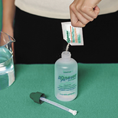
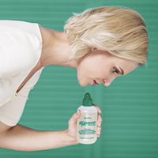
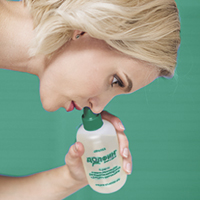
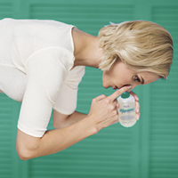

|
 |
| ДОЛФИН® (DOLPHIN) средство д/промывания | |||
|
Номер и дата регистрации: ФСР 2008/02703 от 20.05.21 Групповая принадлежность: Медицинское изделие для увлажнения, очищения и защиты слизистой оболочки ЛОР-органов |
Владелец регистрационного удостоверения: зарегистрировано и произведено Представительство: | ||
Форма выпуска, состав и упаковка Средство для промывания гипоаллергенное (рецепт №2) в виде порошка. Состав средства для промывания гипоаллергенного (рецепт №2): галит, натрий двууглекислый (сода пищевая). Технические характеристики: масса средства для промывания гипоаллергенного (1 пакетик) - 2 г. 2 г - пакетики для одноразового применения (30) - коробки картонные. | |||
| |||
Описание препарата основано на официально утвержденной инструкции по применению и утверждено компанией-производителем для издания 2022 г. | |||
Свойства |
Область применения |
Рекомендации по применению |
Побочное действие |
Противопоказания |
Беременность и лактация |
Особые указания |
Передозировка |
Лекарственное взаимодействие |
Условия хранения и сроки годности |
Условия реализации
Свойства
Средство предназначено для лечения и профилактики заболеваний ЛОР-органов посредством промывания носа и полоскания носоглотки раствором, изготовленным с применением средства для промывания. Способствует удалению вирусов, бактерий и аллергенов за счет глубокого сквозного промывания, в составе нет растительных компонентов для снижения риска аллергии. Средство для промывания - порошок для приготовления раствора, применяется с устройством оториноларингологическим для промывания индивидуальным Долфин®. Средство может входить в комплект устройства Долфин® емкостью 240 мл или приобретаться отдельно. Область применения
Устройство применяется также для профилактики этих заболеваний, промывания и полоскания носоглотки в гигиенических целях. Рекомендации по применению
Приготовление раствора 1. Разрежьте пакетик со средством и высыпьте его содержимое в емкость устройства. 2. Налейте в емкость устройства теплую кипяченую воду (температура воды не должна превышать 36°С). 3. Закройте емкость крышкой с трубкой и взболтайте до полного растворения средства. Раствор готов к применению. Промывание носа Рекомендуемое число промываний в сутки: 2-4 раза или в соответствии с назначением врача. Длительность применения При простудных заболеваниях - 2-4 недели в зависимости от тяжести заболевания, при аллергическом рините - в течение всего периода высокой концентрации аллергенов, для профилактики ОРВИ - ежедневно в период эпидемии; для гигиены полости носа - 1 раз/сут ежедневно. Проверьте носовые ходы Рис. 1 Подышите поочередно каждой ноздрей, зажав противоположную ноздрю пальцем. Если проходимость хотя бы одного носового хода затруднена, обязательно очистите носовые ходы (высморкайтесь и/или воспользуйтесь сосудосуживающими препаратами). Засыпьте средство в устройство и растворите в воде (см. выше "Приготовление раствора").  Рис. 2 Примите правильное положение  Рис. 3 Возьмите в руки устройство с приготовленным раствором и наклонитесь вперед на 90°. Лицо обязательно должно быть параллельно полу. При промывании не поворачивайте голову в сторону. Промойте нос  Рис. 4 Плотно прижмите крышку устройства к промываемой ноздре. Глубоко вдохните, задержите дыхание, приоткройте рот на время проведения процедуры. Плавно, медленно, с минимальным давлением сжимайте емкость. При этом раствор равномерно заполняет промываемый носовой ход и вытекает наружу через другую ноздрю. Если во время процедуры часть раствора попала в рот, необходимо сплюнуть раствор. Не меняя положения тела и головы, аналогичным способом промойте другой носовой ход. Промывайте по очереди левый и правый носовой ход, пока не закончится раствор в устройстве. Освободите нос от жидкости Рис. 5 Когда раствор перестанет вытекать из противоположной ноздри, уберите устройство от носа и затем разожмите пальцы. Не меняя положения головы, высморкайтесь, держа рот приоткрытым. Удалите остатки раствора  Рис. 6 Для окончательного удаления из носовых ходов остатков раствора и слизи сожмите пустую емкость устройства, вдохните и задержите дыхание, закройте рот. Плотно приложите крышку устройства к правой ноздре, закрыв левую ноздрю пальцем свободной руки. Затем разожмите емкость, при этом емкость расправится. Также выполняется процедура удаления остатков раствора и слизи из левой ноздри. Голову можно поднять только после завершения процедуры. После применения разберите устройство, промойте детали теплой водой с моющим средством, а затем проточной водой не менее трех раз, протрите и просушите. Полоскание горла Применять 1-2 раза/сут или в соответствии с назначением врача. Растворите содержимое одного пакетика в 120 мл теплой кипяченой воды (1/2 стакана), температура воды не должна превышать 36°С. Раствор для полоскания готов. Не глотайте раствор во время полоскания. Рекомендуется проводить процедуру полоскания горла в том момент, когда вы чувствуете, что заболеваете, в период наступления холодов, в качестве профилактики сезонной заболеваемости ОРВИ, а также в гигиенических целях. Противопоказания
Особые указания
Перед применением рекомендуется проконсультироваться с лечащим врачом. Не рекомендуется глотать раствор. Следует использовать только свежеприготовленный раствор средства для промывания. Не применять для приготовления раствора очень горячую или очень холодную воду. В течение 10-15 мин после промывания возможно выделение жидкости из носа, поэтому нежелательно делать процедуры непосредственно перед сном. В холодное время года желательно проводить промывание носа за 20-30 мин до выхода на улицу. Утилизация При применении в лечебном учреждении изделия с истекшим сроком годности должны быть утилизированы как медицинские отходы класса А в соответствии СанПин 2.1.7.2790. При применении в домашних условиях изделия с истекшим сроком годности утилизируются как бытовые отходы. |
|||
Вернуться наверх |
|||
Copyright © Справочник Видаль «Лекарственные препараты в России», Москва, Россия